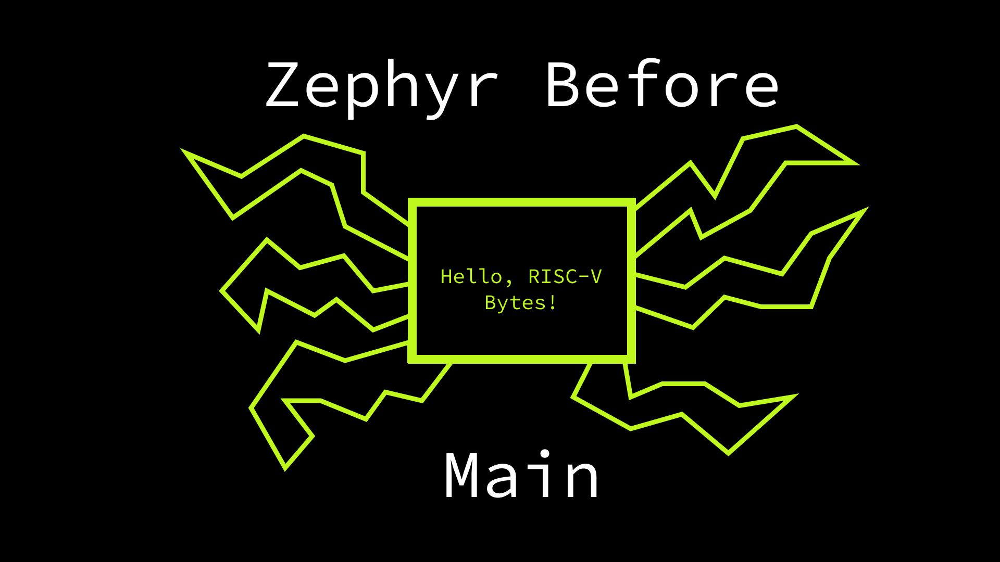

In the last two posts in the RISC-V Bytes series we have looked at a bootloader for the ESP32-C3, then built a Zephyr application that was loaded by it. In this post we’ll take a closer look at that “Hello, World” application, diving into what happens prior to printing our message to the UART console.
Note: all analysis and code samples used in this post correspond to the v3.3.0 release of Zephyr.

Sections Link to heading
Finding the Entrypoint Link to heading
When we installed the Zephyr
SDK, we not only acquired a
compiler for our target platform, but also all supporting tooling needed for the
build process and subsequent operations. To makes these tools accessible, you
can add the relevant /bin directory to your PATH.
$ export PATH=$PATH:/home/hasheddan/.local/home/hasheddan/.local/zephyr-sdk-0.16.0/riscv64-zephyr-elf/bin
We will primarily be using objdump to
explore our application image. The first step is finding the entrypoint, which
is where the bootloader will jump after copying the image from ROM into RAM. The
application image for our example in the last
post
can be found in the build/zephyr directory. Passing the -f flag to objdump
will give us only the ELF file header.
$ riscv64-zephyr-elf-objdump -f zephyr/zephyr.elf
zephyr/zephyr.elf: file format elf32-littleriscv
architecture: riscv:rv32, flags 0x00000012:
EXEC_P, HAS_SYMS
start address 0x40382bb0
The start address is determined by the ENTRY
command of
the final linker script, linker.cmd , which also resides in the build/zephyr
directory.
$ cat zephyr/linker.cmd | grep __start
ENTRY("__start")
This specifies that execution should begin at the address of the symbol
__start.
SoC Setup Link to heading
We can see the disassembly of the __start symbol by passing it to objdump
via the --disassemble flag.
$ riscv64-zephyr-elf-riscv64-zephyr-elf-objdump zephyr.elf --disassemble="__start"
zephyr.elf: file format elf32-littleriscv
Disassembly of section .iram0.text:
40382bb0 <__start>:
40382bb0: f2cfd06f j 403802dc <__esp_platform_start>
Disassembly of section .flash.text:
All we are doing is jumping to __esp_platform_start, which is clearly specific
to our Espressif (esp) target. The first steps of a Zephyr application are
typically defined in the Zephyr repository’s soc/ (“system on chip”)
directory. This
directory is where platform-specific code lives, which may be applicable to one
or more boards defined in the boards/
directory. These
two directories, along with the arch/
directory, allow
for Zephyr to reuse as much functionality as possible, while still being able to
run on many targets. It is helpful to conceptualize them with increasing levels
of specificity.
arch/riscv: functionality that is standardized as part of the RISC-V set of specifications and is applicable to all RISC-V platforms.soc/riscv/<platform>: functionality that is specific to a single platform (or “system on chip”), which may be present on many devices, but always has common attributes. It is typical for linker scripts and hardware initilization logic to live here.boards/riscv/<board>: functionality that only applies to a single device (or tightly related series of devices). This is where devicetree files are defined that describe the board’s specific peripherals and their corresponding memory-mapped addresses.
Note: there are other places where platform-specific code may be defined, particularly for various drivers. One such example is the ESP32-C3 interrupt controller.
For the ESP32-C3, the __start function is defined in
soc/riscv/esp32c3/loader.c.
soc/riscv/esp32c3/loader.c
(source)
void __start(void)
{
#ifdef CONFIG_BOOTLOADER_MCUBOOT
int err = map_rom_segments();
if (err != 0) {
ets_printf("Failed to setup XIP, aborting\n");
abort();
}
#endif
__esp_platform_start();
}
Because we are not using
MCUboot, all we
do is jump to __esp_platform_start, which is defined in
soc/riscv/esp32c3/soc.c. This function contains all setup required prior to
starting up the Zephyr kernel, such as:
Pointing the mtvec CSR (Control & Status Register) _esp32c3_vector_table.
soc/riscv/esp32c3/soc.c (source)
__asm__ __volatile__("la t0, _esp32c3_vector_table\n"
"csrw mtvec, t0\n");
Disabling interrupts.
soc/riscv/esp32c3/soc.c (source)
/* Disable normal interrupts. */
csr_read_clear(mstatus, MSTATUS_MIE);
And initializing clocks.
soc/riscv/esp32c3/soc.c (source)
/* Configures the CPU clock, RTC slow and fast clocks, and performs
* RTC slow clock calibration.
*/
esp_clk_init();
However, the final step is calling z_cstart(), which is ultimately where we
will start the kernel.
soc/riscv/esp32c3/soc.c
(source)
/* Start Zephyr */
z_cstart();
We can find this same call at the bottom of the symbol disassembly in our binary.
$ riscv64-zephyr-elf-objdump zephyr.elf --disassemble="__esp_platform_start" | tail -5
40380384: 01c93097 auipc ra,0x1c93
40380388: e48080e7 jalr -440(ra) # 420131cc <esp_intr_initialize>
4038038c: 434000ef jal ra,403807c0 <z_cstart>
Disassembly of section .flash.text:
Zephyr Threads Link to heading
Much of the early kernel setup in Zephyr depends on whether
threads
are enabled or not. Zephyr threads are much like threads in other execution
environments: they represent independent sequences of instructions with their
own associated state. Threads are enabled by default in Zephyr, as evidenced by
CONFIG_MULTITHREADING being set to y by
default.
Though many threads may be spawned, there are two system
threads
that Zephyr spins up by default: the main thread and the idle thread.
The main thread is the one in which our application entrypoint will begin
executing. However, we noticed when flashing and
running
our simple example that, though our main() function returns, the application
continued running.
main.c
#include <zephyr/kernel.h>
int main(void)
{
printk("Hello, RISC-V Bytes!\n");
return 0;
}
This is due to the kernel switching to the idle thread, which will do nothing
until there is more work to be done. In our example, there never is.
Getting to Main Link to heading
The entire dump of z_cstart() is included below. It can be helpful to see it
all as a single block, but we will break it down into smaller pieces in a
moment. The first thing you’ll notice at the beginning is the function prologue,
which we are familiar with from previous posts where we have used a stack. The
esp-idf bootloader already has setup
our stack, which is what allows for z_cstart() (and the preceding platform
setup) to be written in C. The first few instructions show growing our stack
(addi sp,sp,-192), then storing our
callee-saved
registers on it (ra, s0, s1, s2, s3).
$ riscv64-zephyr-elf-objdump zephyr/zephyr.elf --disassemble=z_cstart
zephyr/zephyr.elf: file format elf32-littleriscv
Disassembly of section .iram0.text:
403807c0 <z_cstart>:
403807c0: f4010113 addi sp,sp,-192
403807c4: 00000513 li a0,0
403807c8: 0a112e23 sw ra,188(sp)
403807cc: 0a812c23 sw s0,184(sp)
403807d0: 0a912a23 sw s1,180(sp)
403807d4: 0b212823 sw s2,176(sp)
403807d8: 01810493 addi s1,sp,24
403807dc: 0b312623 sw s3,172(sp)
403807e0: 3fc83437 lui s0,0x3fc83
403807e4: df5ff0ef jal ra,403805d8 <z_sys_init_run_level>
403807e8: 10100793 li a5,257
403807ec: 00048513 mv a0,s1
403807f0: df040413 addi s0,s0,-528 # 3fc82df0 <_kernel>
403807f4: 02f11223 sh a5,36(sp)
403807f8: 1d4010ef jal ra,403819cc <k_thread_system_pool_assign>
403807fc: 00942423 sw s1,8(s0)
40380800: d3dff0ef jal ra,4038053c <z_device_state_init>
40380804: 00100513 li a0,1
40380808: dd1ff0ef jal ra,403805d8 <z_sys_init_run_level>
4038080c: 00200513 li a0,2
40380810: dc9ff0ef jal ra,403805d8 <z_sys_init_run_level>
40380814: 185000ef jal ra,40381198 <z_sched_init>
40380818: 3c0007b7 lui a5,0x3c000
4038081c: 73c78793 addi a5,a5,1852 # 3c00073c <__pinctrl_state_pins_0__device_dts_ord_39+0x10>
40380820: 3fc834b7 lui s1,0x3fc83
40380824: 00f12223 sw a5,4(sp)
40380828: 403806b7 lui a3,0x40380
4038082c: 00100793 li a5,1
40380830: 00001637 lui a2,0x1
40380834: 3fc845b7 lui a1,0x3fc84
40380838: d4048913 addi s2,s1,-704 # 3fc82d40 <z_main_thread>
4038083c: 00000893 li a7,0
40380840: 00000813 li a6,0
40380844: 00000713 li a4,0
40380848: 68468693 addi a3,a3,1668 # 40380684 <bg_thread_main>
4038084c: 80060613 addi a2,a2,-2048 # 800 <CONFIG_ISR_STACK_SIZE>
40380850: 82058593 addi a1,a1,-2016 # 3fc83820 <z_main_stack>
40380854: 00f12023 sw a5,0(sp)
40380858: d4048513 addi a0,s1,-704
4038085c: 00000793 li a5,0
40380860: 01242c23 sw s2,24(s0)
40380864: 060000ef jal ra,403808c4 <z_setup_new_thread>
40380868: 00d94783 lbu a5,13(s2)
4038086c: d4048513 addi a0,s1,-704
40380870: ffb7f793 andi a5,a5,-5
40380874: 00f906a3 sb a5,13(s2)
40380878: 714000ef jal ra,40380f8c <z_ready_thread>
4038087c: 00000513 li a0,0
40380880: e7dff0ef jal ra,403806fc <z_init_cpu>
40380884: 30047973 csrrci s2,mstatus,8
40380888: 00842983 lw s3,8(s0)
4038088c: ff500793 li a5,-11
40380890: 06f9ac23 sw a5,120(s3)
40380894: 300477f3 csrrci a5,mstatus,8
40380898: 0d5000ef jal ra,4038116c <z_swap_next_thread>
4038089c: 02a98063 beq s3,a0,403808bc <z_cstart+0xfc>
403808a0: 00050493 mv s1,a0
403808a4: 00a42423 sw a0,8(s0)
403808a8: 1e0000ef jal ra,40380a88 <z_reset_time_slice>
403808ac: 07c4a503 lw a0,124(s1)
403808b0: 00098593 mv a1,s3
403808b4: 01c93097 auipc ra,0x1c93
403808b8: 818080e7 jalr -2024(ra) # 420130cc <z_riscv_switch>
403808bc: 00897913 andi s2,s2,8
403808c0: 30092073 csrs mstatus,s2
Disassembly of section .flash.text:
Hardware Initialization Link to heading
Following the prologue, we encounter the first invocation of the
z_sys_init_run_level() function (jal ra,403805d8), which incrementally
initializes various objects throughout kernel startup according to a specified
level. The first level is INIT_LEVEL_EARLY.
kernel/init.c
(source)
/* initialize early init calls */
z_sys_init_run_level(INIT_LEVEL_EARLY);
Prior to our jal instruction, there is a li a0,0 instruction in the middle
of the function prologue. This corresponds to passing INIT_LEVEL_EARLY, which
is the 0 level. Throughout z_cstart(), there are two more calls to
z_sys_init_run_level(), one with a preceding li a0,1 and another with a
preceding li a0,2 for INIT_LEVEL_PRE_KERNEL_1 and INIT_LEVEL_PRE_KERNEL_2
respectively.
kernel/init.c
(source)
/* perform basic hardware initialization */
z_sys_init_run_level(INIT_LEVEL_PRE_KERNEL_1);
z_sys_init_run_level(INIT_LEVEL_PRE_KERNEL_2);
The First Thread Link to heading
Between the first initialization call and the second and third, we perform the first step in boostrapping threads.
kernel/init.c
(source)
#if defined(CONFIG_MULTITHREADING)
/* Note: The z_ready_thread() call in prepare_multithreading() requires
* a dummy thread even if CONFIG_ARCH_HAS_CUSTOM_SWAP_TO_MAIN=y
*/
struct k_thread dummy_thread;
z_dummy_thread_init(&dummy_thread);
#endif
Though CONFIG_MULTITHREADING is defined, we don’t see a call to
z_dummy_thread_init()
due to the function being specified as inline.
kernel/include/kswap.h
(source)
static inline void z_dummy_thread_init(struct k_thread *dummy_thread)
Instead we see a sequence of instructions that are setting up our first thread
(dummy_thread).
403807d8: 01810493 addi s1,sp,24
...
403807e8: 10100793 li a5,257
403807ec: 00048513 mv a0,s1
403807f0: df040413 addi s0,s0,-528 # 3fc82df0 <_kernel>
403807f4: 02f11223 sh a5,36(sp)
403807f8: 1d4010ef jal ra,403819cc <k_thread_system_pool_assign>
403807fc: 00942423 sw s1,8(s0)
Included from earlier in the z_cstart() disassembly is the addi s1,sp,24,
which is storing a pointer to a stack location into the s1 callee-saved
register. This happens to be the pointer to dummy_thread, which is declared in
the function body. In the z_dummy_thread_init() body, we make a call to
k_thread_system_pool_assign().
kernel/include/kswap.h
(source)
#if (CONFIG_HEAP_MEM_POOL_SIZE > 0)
k_thread_system_pool_assign(dummy_thread);
#else
It takes an arugment of the struct pointer that was passed to
z_dummy_thread_init(). To do so, we load the pointer from s1 into the first
argument register, a0, with mv a0,s1. Before we call
k_thread_system_pool_assign(), we also load the address of the _kernel
symbol into the s0 callee-saved register. k_thread_system_pool_assign() is a
fairly simple function that just assigns the SYSTEM_HEAP to the passed
thread’s resource pool.
kernel/mempool.c
(source)
void k_thread_system_pool_assign(struct k_thread *thread)
{
thread->resource_pool = _SYSTEM_HEAP;
}
The Kernel Structure Link to heading
Upon returning to the call, we assign the pointer to dummy_thread in s1 to
an offset of the address of _kernel stored in s0 with sw s1,8(s0).
_kernel is the central data structure, as one might guess, in Zephyr kernel
operations. It is defined as the only instance of z_kernel in init.c.
kernel/init.c
(source)
/* the only struct z_kernel instance */
struct z_kernel _kernel;
The z_kernel structure varies based on enabled features, but it always
contains an array of
_cpu.
include/zephyr/kernel_struct.h
(source)
struct z_kernel {
struct _cpu cpus[CONFIG_MP_MAX_NUM_CPUS];
#ifdef CONFIG_PM
int32_t idle; /* Number of ticks for kernel idling */
#endif
/*
* ready queue: can be big, keep after small fields, since some
* assembly (e.g. ARC) are limited in the encoding of the offset
*/
#ifndef CONFIG_SCHED_CPU_MASK_PIN_ONLY
struct _ready_q ready_q;
#endif
#ifdef CONFIG_FPU_SHARING
/*
* A 'current_sse' field does not exist in addition to the 'current_fp'
* field since it's not possible to divide the IA-32 non-integer
* registers into 2 distinct blocks owned by differing threads. In
* other words, given that the 'fxnsave/fxrstor' instructions
* save/restore both the X87 FPU and XMM registers, it's not possible
* for a thread to only "own" the XMM registers.
*/
/* thread that owns the FP regs */
struct k_thread *current_fp;
#endif
#if defined(CONFIG_THREAD_MONITOR)
struct k_thread *threads; /* singly linked list of ALL threads */
#endif
#if defined(CONFIG_SMP) && defined(CONFIG_SCHED_IPI_SUPPORTED)
/* Need to signal an IPI at the next scheduling point */
bool pending_ipi;
#endif
};
There is only 1 hart in the ESP32-C3, so the cpus array is of length 1. This
can be verified by grepping for the CONFIG_MP_MAX_NUM_CPUS value in the
build/ directory.
$ grep -r CONFIG_MP_MAX_NUM_CPUS=
zephyr/.config:CONFIG_MP_MAX_NUM_CPUS=1
The offset of 8 corresponds to the current thread for the first hart, which
is the final operation in the z_dummy_thread_init() function.
kernel/include/kswap.h
(source)
_current_cpu->current = dummy_thread;
Setting up the Main Thread Link to heading
Returning back to z_cstart(), we are now ready to start up the scheduler and
switch to the main thread.
kernel/init.c
(source)
#ifdef CONFIG_MULTITHREADING
switch_to_main_thread(prepare_multithreading());
#else
Both prepare_multithreading() and switch_to_main_thread() are inlined. The
first call in prepare_multithreading() is to initialize the scheduler.
kernel/sched.c
(source)
void z_sched_init(void)
{
#ifdef CONFIG_SCHED_CPU_MASK_PIN_ONLY
unsigned int num_cpus = arch_num_cpus();
for (int i = 0; i < num_cpus; i++) {
init_ready_q(&_kernel.cpus[i].ready_q);
}
#else
init_ready_q(&_kernel.ready_q);
#endif
#ifdef CONFIG_TIMESLICING
k_sched_time_slice_set(CONFIG_TIMESLICE_SIZE,
CONFIG_TIMESLICE_PRIORITY);
#endif
}
In our case, this resolves to a call to init_ready_q(), which sets up a
doubly-linked list via sys_dlist_init().
kernel/sched.c
(source)
void init_ready_q(struct _ready_q *rq)
{
#if defined(CONFIG_SCHED_SCALABLE)
rq->runq = (struct _priq_rb) {
.tree = {
.lessthan_fn = z_priq_rb_lessthan,
}
};
#elif defined(CONFIG_SCHED_MULTIQ)
for (int i = 0; i < ARRAY_SIZE(_kernel.ready_q.runq.queues); i++) {
sys_dlist_init(&rq->runq.queues[i]);
}
#else
sys_dlist_init(&rq->runq);
#endif
}
The next few calls are to setup the main and idle threads.
kernel/init.c
(source)
stack_ptr = z_setup_new_thread(&z_main_thread, z_main_stack,
CONFIG_MAIN_STACK_SIZE, bg_thread_main,
NULL, NULL, NULL,
CONFIG_MAIN_THREAD_PRIORITY,
K_ESSENTIAL, "main");
z_mark_thread_as_started(&z_main_thread);
z_ready_thread(&z_main_thread);
z_init_cpu(0);
return stack_ptr;
z_setup_new_thread() dominates the majority of the instructions in the
z_cstart() disassembly, primarily due to the number of arguments it accepts.
40380818: 3c0007b7 lui a5,0x3c000
4038081c: 73c78793 addi a5,a5,1852 # 3c00073c <__pinctrl_state_pins_0__device_dts_ord_39+0x10>
40380820: 3fc834b7 lui s1,0x3fc83
40380824: 00f12223 sw a5,4(sp)
40380828: 403806b7 lui a3,0x40380
4038082c: 00100793 li a5,1
40380830: 00001637 lui a2,0x1
40380834: 3fc845b7 lui a1,0x3fc84
40380838: d4048913 addi s2,s1,-704 # 3fc82d40 <z_main_thread>
4038083c: 00000893 li a7,0
40380840: 00000813 li a6,0
40380844: 00000713 li a4,0
40380848: 68468693 addi a3,a3,1668 # 40380684 <bg_thread_main>
4038084c: 80060613 addi a2,a2,-2048 # 800 <CONFIG_ISR_STACK_SIZE>
40380850: 82058593 addi a1,a1,-2016 # 3fc83820 <z_main_stack>
40380854: 00f12023 sw a5,0(sp)
40380858: d4048513 addi a0,s1,-704
4038085c: 00000793 li a5,0
40380860: 01242c23 sw s2,24(s0)
40380864: 060000ef jal ra,403808c4 <z_setup_new_thread>
The first thing you’ll notice is a seemingly odd reference to
__pinctrl_state_pins_0__device_dts_ord_39+0x10, with the address subsequently
being stored on the stack (sw a5,4(sp)). Most of the other operations are
expected as they are loading either values or addresses into argument registers
before calling z_setup_new_thread(). However, there is another stack operation
(sw a5,0(sp)) prior to the call, and the location on the stack for these two
operations should give us a hint to what is going on.
In a previous post, we examined a function that accepted 10 arguments. It just so happens that we are accepting 10 arguments here and experiencing the same behavior as we saw before: spilling arguments on the stack. As specified in the RISC-V calling conventions, we are using the lowest addresses on the stack to pass our spilled arguments.
The stack grows downwards (towards lower addresses) and the stack pointer shall be aligned to a 128-bit boundary upon procedure entry. The first argument passed on the stack is located at offset zero of the stack pointer on function entry; following arguments are stored at correspondingly higher addresses.
So we know why we are storing arguments on the stack, but the significance of
the address is still not obvious. We can again use objdump to investigate.
$ riscv64-zephyr-elf-objdump zephyr/zephyr.elf -j rodata --disassemble="__pinctrl_state_pins_0__device_dts_ord_39"
zephyr/zephyr.elf: file format elf32-littleriscv
Disassembly of section rodata:
3c00072c <__pinctrl_state_pins_0__device_dts_ord_39>:
3c00072c: d5 7f 03 00 00 00 00 00 94 81 ff 00 02 00 00 00 ................
3c00073c: 6d 61 69 6e 00 00 00 00 main....
objdump helpfully decodes the 4 bytes at the 0x10 offset into their ASCII
representation, with 6d 61 69 61 translating to main, which is the final
argument to the z_setup_new_thread() call. Looking at the
z_setup_new_thread() declaration, we can observe the purpose of all passed
arguments.
kernel/include/kernel_internal.h
(source)
extern char *z_setup_new_thread(struct k_thread *new_thread,
k_thread_stack_t *stack, size_t stack_size,
k_thread_entry_t entry,
void *p1, void *p2, void *p3,
int prio, uint32_t options, const char *name);
Of particular interest in the entry argument, which is where we are passing
bg_thread_main. Later on, following setup and switch to the main thread,
bg_thread_main is where we will begin executing instructions. This is
configured via a few operations in the body of z_setup_new_thread(). The first
of note is a call to arch_new_thread().
kernel/thread.c
(source)
arch_new_thread(new_thread, stack, stack_ptr, entry, p1, p2, p3);
This call is defined for the specific target architecture, in this case RISC-V. All architecture-specific thread setup can be performed in this function, such as setting up the initial stack frame for the thread.
arch/riscv/core/thread.c (source)
void arch_new_thread(struct k_thread *thread, k_thread_stack_t *stack,
char *stack_ptr, k_thread_entry_t entry,
void *p1, void *p2, void *p3)
{
extern void z_riscv_thread_start(void);
struct __esf *stack_init;
#ifdef CONFIG_RISCV_SOC_CONTEXT_SAVE
const struct soc_esf soc_esf_init = {SOC_ESF_INIT};
#endif
/* Initial stack frame for thread */
stack_init = (struct __esf *)Z_STACK_PTR_ALIGN(
Z_STACK_PTR_TO_FRAME(struct __esf, stack_ptr)
);
/* Setup the initial stack frame */
stack_init->a0 = (unsigned long)entry;
stack_init->a1 = (unsigned long)p1;
stack_init->a2 = (unsigned long)p2;
stack_init->a3 = (unsigned long)p3;
/*
* Following the RISC-V architecture,
* the MSTATUS register (used to globally enable/disable interrupt),
* as well as the MEPC register (used to by the core to save the
* value of the program counter at which an interrupt/exception occurs)
* need to be saved on the stack, upon an interrupt/exception
* and restored prior to returning from the interrupt/exception.
* This shall allow to handle nested interrupts.
*
* Given that thread startup happens through the exception exit
* path, initially set:
* 1) MSTATUS to MSTATUS_DEF_RESTORE in the thread stack to enable
* interrupts when the newly created thread will be scheduled;
* 2) MEPC to the address of the z_thread_entry in the thread
* stack.
* Hence, when going out of an interrupt/exception/context-switch,
* after scheduling the newly created thread:
* 1) interrupts will be enabled, as the MSTATUS register will be
* restored following the MSTATUS value set within the thread stack;
* 2) the core will jump to z_thread_entry, as the program
* counter will be restored following the MEPC value set within the
* thread stack.
*/
stack_init->mstatus = MSTATUS_DEF_RESTORE;
#if defined(CONFIG_FPU_SHARING)
/* thread birth happens through the exception return path */
thread->arch.exception_depth = 1;
#elif defined(CONFIG_FPU)
/* Unshared FP mode: enable FPU of each thread. */
stack_init->mstatus |= MSTATUS_FS_INIT;
#endif
#if defined(CONFIG_USERSPACE)
/* Clear user thread context */
z_riscv_pmp_usermode_init(thread);
thread->arch.priv_stack_start = 0;
#endif /* CONFIG_USERSPACE */
/* Assign thread entry point and mstatus.MPRV mode. */
if (IS_ENABLED(CONFIG_USERSPACE)
&& (thread->base.user_options & K_USER)) {
/* User thread */
stack_init->mepc = (unsigned long)k_thread_user_mode_enter;
} else {
/* Supervisor thread */
stack_init->mepc = (unsigned long)z_thread_entry;
#if defined(CONFIG_PMP_STACK_GUARD)
/* Enable PMP in mstatus.MPRV mode for RISC-V machine mode
* if thread is supervisor thread.
*/
stack_init->mstatus |= MSTATUS_MPRV;
#endif /* CONFIG_PMP_STACK_GUARD */
}
#if defined(CONFIG_PMP_STACK_GUARD)
/* Setup PMP regions of PMP stack guard of thread. */
z_riscv_pmp_stackguard_prepare(thread);
#endif /* CONFIG_PMP_STACK_GUARD */
#ifdef CONFIG_RISCV_SOC_CONTEXT_SAVE
stack_init->soc_context = soc_esf_init;
#endif
thread->callee_saved.sp = (unsigned long)stack_init;
/* where to go when returning from z_riscv_switch() */
thread->callee_saved.ra = (unsigned long)z_riscv_thread_start;
/* our switch handle is the thread pointer itself */
thread->switch_handle = thread;
}
Note: We’ll explore RISC-V thread support in more depth in a future post.
Following the architecture-specific setup, we set the entrypoint to entry,
then add the thread to the doubly-linked list in the _kernel.
kernel/thread.c (source)
new_thread->entry.pEntry = entry;
new_thread->entry.parameter1 = p1;
new_thread->entry.parameter2 = p2;
new_thread->entry.parameter3 = p3;
k_spinlock_key_t key = k_spin_lock(&z_thread_monitor_lock);
new_thread->next_thread = _kernel.threads;
_kernel.threads = new_thread;
k_spin_unlock(&z_thread_monitor_lock, key);
After all setup is complete, z_setup_new_thread() returns the stack pointer
for the new thread.
kernel/thread.c (source)
return new_thread;
Back in the inlined prepare_multithreading() function, the call to
z_mark_thread_as_started() is inlined as the following instructions.
40380868: 00d94783 lbu a5,13(s2)
4038086c: d4048513 addi a0,s1,-704
40380870: ffb7f793 andi a5,a5,-5
40380874: 00f906a3 sb a5,13(s2)
We previously loaded the address of z_main_thread into s2, so we are simply
changing the base.thread_state as evidenced by the definition of
z_mark_thread_as_started().
kernel/include/ksched.h (source)
static inline void z_mark_thread_as_started(struct k_thread *thread)
{
thread->base.thread_state &= ~_THREAD_PRESTART;
}
This is followed by adding the thread to the ready queue, with a call to
z_ready_thread().
40380878: 714000ef jal ra,40380f8c <z_ready_thread>
The last operation before finishing up mulithread preparation is to initialize
the hart (CPU). We specify hart 0 in the a0 argument register then jump to
z_init_cpu().
4038087c: 00000513 li a0,0
40380880: e7dff0ef jal ra,403806fc <z_init_cpu>
z_init_cpu() initializes the CPU’s interrupt stack, but also sets up its idle
thread, which we mentioned all the way back in the overview of Zephyr system
threads.
kernel/init.c (source)
void z_init_cpu(int id)
{
init_idle_thread(id);
_kernel.cpus[id].idle_thread = &z_idle_threads[id];
_kernel.cpus[id].id = id;
_kernel.cpus[id].irq_stack =
(Z_KERNEL_STACK_BUFFER(z_interrupt_stacks[id]) +
K_KERNEL_STACK_SIZEOF(z_interrupt_stacks[id]));
#ifdef CONFIG_SCHED_THREAD_USAGE_ALL
_kernel.cpus[id].usage.track_usage =
CONFIG_SCHED_THREAD_USAGE_AUTO_ENABLE;
#endif
}
Setup for the idle thread looks somewhat similar to the main thread setup previously performed.
kernel/init.c (source)
static void init_idle_thread(int i)
{
struct k_thread *thread = &z_idle_threads[i];
k_thread_stack_t *stack = z_idle_stacks[i];
#ifdef CONFIG_THREAD_NAME
#if CONFIG_MP_MAX_NUM_CPUS > 1
char tname[8];
snprintk(tname, 8, "idle %02d", i);
#else
char *tname = "idle";
#endif
#else
char *tname = NULL;
#endif /* CONFIG_THREAD_NAME */
z_setup_new_thread(thread, stack,
CONFIG_IDLE_STACK_SIZE, idle, &_kernel.cpus[i],
NULL, NULL, K_IDLE_PRIO, K_ESSENTIAL,
tname);
z_mark_thread_as_started(thread);
#ifdef CONFIG_SMP
thread->base.is_idle = 1U;
#endif
}
Finally, we are ready to begin the process of switching to the main thread,
returning its stack pointer to switch_to_main_thread(). RISC-V does not define
a custom swap to main function, so we immediately call z_swap_unlocked(),
which, you guessed it, is also inlined.
kernel/init.c (source)
__boot_func
static FUNC_NORETURN void switch_to_main_thread(char *stack_ptr)
{
#ifdef CONFIG_ARCH_HAS_CUSTOM_SWAP_TO_MAIN
arch_switch_to_main_thread(&z_main_thread, stack_ptr, bg_thread_main);
#else
ARG_UNUSED(stack_ptr);
/*
* Context switch to main task (entry function is _main()): the
* current fake thread is not on a wait queue or ready queue, so it
* will never be rescheduled in.
*/
z_swap_unlocked();
#endif
CODE_UNREACHABLE; /* LCOV_EXCL_LINE */
}
Switching to Main Link to heading
z_swap_unlocked() calls do_swap(), but before doing so it needs to acquire
the interrupt request (IRQ) lock to avoid being interrupted while swapping
threads.
kernel/include/kswap.h (source)
static inline void z_swap_unlocked(void)
{
(void) do_swap(arch_irq_lock(), NULL, true);
}
As with most functions prefixed with arch_, arch_irq_lock() is
architecture-specific, and for RISC-V it involves modifying the machine
interrupt enable (MIE) bit in the mstatus Control & Status Register
(CSR).
include/zephyr/arch/riscv/arch.h (source)
/*
* use atomic instruction csrrc to lock global irq
* csrrc: atomic read and clear bits in CSR register
*/
static ALWAYS_INLINE unsigned int arch_irq_lock(void)
{
#ifdef CONFIG_RISCV_SOC_HAS_CUSTOM_IRQ_LOCK_OPS
return z_soc_irq_lock();
#else
unsigned int key;
__asm__ volatile ("csrrc %0, mstatus, %1"
: "=r" (key)
: "rK" (MSTATUS_IEN)
: "memory");
return key;
#endif
}
The atomic read and clear immediate (csrrci) instruction is next in our
disassembly. MSTATUS_IEN translates to 8, as the MIE bit is in the 4th
position in mstatus, so we can clear it with 1000. The value of mstatus
before the bit is cleared is stored in s2.
40380884: 30047973 csrrci s2,mstatus,8
40380888: 00842983 lw s3,8(s0)
4038088c: ff500793 li a5,-11
40380890: 06f9ac23 sw a5,120(s3)
40380894: 300477f3 csrrci a5,mstatus,8
The subsequent instructions are inlined from do_swap(). The first is loading
our _current thread from the _kernel structure, the address of which we
previously stored in s0. We used the 8 bit offset in the _kernel structure
earlier to set _current to the dummy_thread, and now are loading it back
into s3.
kernel/include/kswap.h (source)
old_thread = _current;
z_check_stack_sentinel();
old_thread->swap_retval = -EAGAIN;
/* We always take the scheduler spinlock if we don't already
* have it. We "release" other spinlocks here. But we never
* drop the interrupt lock.
*/
if (is_spinlock && lock != NULL && lock != &sched_spinlock) {
k_spin_release(lock);
}
if (!is_spinlock || lock != &sched_spinlock) {
(void) k_spin_lock(&sched_spinlock);
}
new_thread = z_swap_next_thread();
z_check_stack_sentinel() is a no-op as we don’t have
CONFIG_STACK_SENTINEL
enabled, so the next operation is to set the dummy_thread swap return value to
-EAGAIN, which corresponds to the li a5,-11 and sw a5,120(s3)
instructions. Because we passed NULL as lock to do_swap(), we then call
k_spin_lock(), which causes, in this case, an extraneous second disabling of
the machine-level interrupts in mstatus (csrrci a5,mstatus,8). We now are
ready to swap to the next thread on the queue with z_swap_next_thread().
40380898: 0d5000ef jal ra,4038116c <z_swap_next_thread>
We previously added the main thread to the queue when we called
z_ready_thread(), so it will be assigned as new_thread.
kernel/sched.c (source)
struct k_thread *z_swap_next_thread(void)
{
#ifdef CONFIG_SMP
struct k_thread *ret = next_up();
if (ret == _current) {
/* When not swapping, have to signal IPIs here. In
* the context switch case it must happen later, after
* _current gets requeued.
*/
signal_pending_ipi();
}
return ret;
#else
return _kernel.ready_q.cache;
#endif
}
When we return, we check that new_thread is not the same as old_thread,
which is true in this case, meaning we have some additional operations to
perform.
kernel/include/kswap.h (source)
if (new_thread != old_thread) {
z_sched_usage_switch(new_thread);
#ifdef CONFIG_SMP
_current_cpu->swap_ok = 0;
new_thread->base.cpu = arch_curr_cpu()->id;
if (!is_spinlock) {
z_smp_release_global_lock(new_thread);
}
#endif
z_thread_mark_switched_out();
wait_for_switch(new_thread);
_current_cpu->current = new_thread;
#ifdef CONFIG_TIMESLICING
z_reset_time_slice(new_thread);
#endif
#ifdef CONFIG_SPIN_VALIDATE
z_spin_lock_set_owner(&sched_spinlock);
#endif
arch_cohere_stacks(old_thread, NULL, new_thread);
#ifdef CONFIG_SMP
/* Add _current back to the run queue HERE. After
* wait_for_switch() we are guaranteed to reach the
* context switch in finite time, avoiding a potential
* deadlock.
*/
z_requeue_current(old_thread);
#endif
void *newsh = new_thread->switch_handle;
if (IS_ENABLED(CONFIG_SMP)) {
/* Active threads MUST have a null here */
new_thread->switch_handle = NULL;
}
k_spin_release(&sched_spinlock);
arch_switch(newsh, &old_thread->switch_handle);
} else {
k_spin_release(&sched_spinlock);
}
Most of the functionality in this block is omitted, or is a no-op for this use
case. All we end up doing before making the final switch is setting the
current thread of _current_cpu to new_thread (mv s1,a0 and sw a0,8(s0)) before resetting the time slice with z_reset_time_slice(), which
receives new_thread via the a0 argument register.
4038089c: 02a98063 beq s3,a0,403808bc <z_cstart+0xfc>
403808a0: 00050493 mv s1,a0
403808a4: 00a42423 sw a0,8(s0)
403808a8: 1e0000ef jal ra,40380a88 <z_reset_time_slice>
Finally we call arch_switch(), which is inlined as a call to
z_riscv_switch().
arch/riscv/include/kernel_arch_func.h (source)
static ALWAYS_INLINE void
arch_switch(void *switch_to, void **switched_from)
{
extern void z_riscv_switch(struct k_thread *new, struct k_thread *old);
struct k_thread *new = switch_to;
struct k_thread *old = CONTAINER_OF(switched_from, struct k_thread,
switch_handle);
#ifdef CONFIG_RISCV_ALWAYS_SWITCH_THROUGH_ECALL
arch_syscall_invoke2((uintptr_t)new, (uintptr_t)old, RV_ECALL_SCHEDULE);
#else
z_riscv_switch(new, old);
#endif
}
We pass the switch_handle for the new_thread (s1) and the old_thread
(s3) in argument registers a0 and a1 respectively.
403808ac: 07c4a503 lw a0,124(s1)
403808b0: 00098593 mv a1,s3
403808b4: 01c93097 auipc ra,0x1c93
403808b8: 818080e7 jalr -2024(ra) # 420130cc <z_riscv_switch>
z_riscv_switch() appears to be doing quite a bit, but as we’ll see shortly,
for our simple use case it is just storing registers from the old thread and
loading them for the new one.
arch/riscv/core/switch.S (source)
/* void z_riscv_switch(k_thread_t *switch_to, k_thread_t *switch_from) */
SECTION_FUNC(TEXT, z_riscv_switch)
/* Save the old thread's callee-saved registers */
DO_CALLEE_SAVED(sr, a1)
/* Save the old thread's stack pointer */
sr sp, _thread_offset_to_sp(a1)
/* Set thread->switch_handle = thread to mark completion */
sr a1, ___thread_t_switch_handle_OFFSET(a1)
/* Get the new thread's stack pointer */
lr sp, _thread_offset_to_sp(a0)
#if defined(CONFIG_THREAD_LOCAL_STORAGE)
/* Get the new thread's tls pointer */
lr tp, _thread_offset_to_tls(a0)
#endif
#if defined(CONFIG_FPU_SHARING)
/* Preserve a0 across following call. s0 is not yet restored. */
mv s0, a0
call z_riscv_fpu_thread_context_switch
mv a0, s0
#endif
#if defined(CONFIG_PMP_STACK_GUARD)
/* Stack guard has priority over user space for PMP usage. */
mv s0, a0
call z_riscv_pmp_stackguard_enable
mv a0, s0
#elif defined(CONFIG_USERSPACE)
/*
* When stackguard is not enabled, we need to configure the PMP only
* at context switch time as the PMP is not in effect while inm-mode.
* (it is done on every exception return otherwise).
*/
lb t0, _thread_offset_to_user_options(a0)
andi t0, t0, K_USER
beqz t0, not_user_task
mv s0, a0
call z_riscv_pmp_usermode_enable
mv a0, s0
not_user_task:
#endif
#if CONFIG_INSTRUMENT_THREAD_SWITCHING
mv s0, a0
call z_thread_mark_switched_in
mv a0, s0
#endif
/* Restore the new thread's callee-saved registers */
DO_CALLEE_SAVED(lr, a0)
/* Return to arch_switch() or _irq_wrapper() */
ret
The disassembly reveals that we are mostly only performing DO_CALLEE_SAVED
operations, as well as loading and storing stack pointers (sp) and setting the
old thread’s switch_handle. However, the most critical operation is part of
restoring the new thread’s callee-saved registers.
420130cc <z_riscv_switch>:
420130cc: 0215aa23 sw ra,52(a1)
420130d0: 0285ac23 sw s0,56(a1)
420130d4: 0295ae23 sw s1,60(a1)
420130d8: 0525a023 sw s2,64(a1)
420130dc: 0535a223 sw s3,68(a1)
420130e0: 0545a423 sw s4,72(a1)
420130e4: 0555a623 sw s5,76(a1)
420130e8: 0565a823 sw s6,80(a1)
420130ec: 0575aa23 sw s7,84(a1)
420130f0: 0585ac23 sw s8,88(a1)
420130f4: 0595ae23 sw s9,92(a1)
420130f8: 07a5a023 sw s10,96(a1)
420130fc: 07b5a223 sw s11,100(a1)
42013100: 0225a823 sw sp,48(a1)
42013104: 06b5ae23 sw a1,124(a1)
42013108: 03052103 lw sp,48(a0)
4201310c: 03452083 lw ra,52(a0)
42013110: 03852403 lw s0,56(a0)
42013114: 03c52483 lw s1,60(a0)
42013118: 04052903 lw s2,64(a0)
4201311c: 04452983 lw s3,68(a0)
42013120: 04852a03 lw s4,72(a0)
42013124: 04c52a83 lw s5,76(a0)
42013128: 05052b03 lw s6,80(a0)
4201312c: 05452b83 lw s7,84(a0)
42013130: 05852c03 lw s8,88(a0)
42013134: 05c52c83 lw s9,92(a0)
42013138: 06052d03 lw s10,96(a0)
4201313c: 06452d83 lw s11,100(a0)
42013140: 00008067 ret
Ealier when calling the RISC-V implementation of arch_new_thread(), we
performed the following operation prior to returning.
arch/riscv/core/thread.c (source)
/* where to go when returning from z_riscv_switch() */
thread->callee_saved.ra = (unsigned long)z_riscv_thread_start;
We are now loading the address of z_riscv_thread_start() into ra, meaning
that when we execute ret, the program counter will jump to executing there.
z_riscv_thread_start() is similar to z_riscv_switch() in that it has the
potential to be quite complex, but for our program it is doing a few fundamental
operations.
arch/riscv/core/isr.S (source)
z_riscv_thread_start:
might_have_rescheduled:
/* reload s0 with &_current_cpu as it might have changed or be unset */
get_current_cpu s0
no_reschedule:
#ifdef CONFIG_RISCV_SOC_CONTEXT_SAVE
/* Restore context at SOC level */
addi a0, sp, __z_arch_esf_t_soc_context_OFFSET
jal ra, __soc_restore_context
#endif /* CONFIG_RISCV_SOC_CONTEXT_SAVE */
#if defined(CONFIG_FPU_SHARING)
/* FPU handling upon exception mode exit */
mv a0, sp
call z_riscv_fpu_exit_exc
/* decrement _current->arch.exception_depth */
lr t0, ___cpu_t_current_OFFSET(s0)
lb t1, _thread_offset_to_exception_depth(t0)
add t1, t1, -1
sb t1, _thread_offset_to_exception_depth(t0)
fp_trap_exit:
#endif
/* Restore MEPC and MSTATUS registers */
lr t0, __z_arch_esf_t_mepc_OFFSET(sp)
lr t2, __z_arch_esf_t_mstatus_OFFSET(sp)
csrw mepc, t0
csrw mstatus, t2
#ifdef CONFIG_USERSPACE
/*
* Check if we are returning to user mode. If so then we must
* set is_user_mode to true and preserve our kernel mode stack for
* the next exception to come.
*/
li t1, MSTATUS_MPP
and t0, t2, t1
bnez t0, 1f
#ifdef CONFIG_PMP_STACK_GUARD
/* Remove kernel stack guard and Reconfigure PMP for user mode */
lr a0, ___cpu_t_current_OFFSET(s0)
call z_riscv_pmp_usermode_enable
#endif
/* Set our per-thread usermode flag */
li t1, 1
lui t0, %tprel_hi(is_user_mode)
add t0, t0, tp, %tprel_add(is_user_mode)
sb t1, %tprel_lo(is_user_mode)(t0)
/* preserve stack pointer for next exception entry */
add t0, sp, __z_arch_esf_t_SIZEOF
sr t0, _curr_cpu_arch_user_exc_sp(s0)
j 2f
1:
/*
* We are returning to kernel mode. Store the stack pointer to
* be re-loaded further down.
*/
addi t0, sp, __z_arch_esf_t_SIZEOF
sr t0, __z_arch_esf_t_sp_OFFSET(sp)
2:
#endif
/* Restore s0 (it is no longer ours) */
lr s0, __z_arch_esf_t_s0_OFFSET(sp)
#ifdef CONFIG_RISCV_SOC_HAS_ISR_STACKING
SOC_ISR_SW_UNSTACKING
#else
/* Restore caller-saved registers from thread stack */
DO_CALLER_SAVED(lr)
#ifdef CONFIG_USERSPACE
/* retrieve saved stack pointer */
lr sp, __z_arch_esf_t_sp_OFFSET(sp)
#else
/* remove esf from the stack */
addi sp, sp, __z_arch_esf_t_SIZEOF
#endif
#endif /* CONFIG_RISCV_SOC_HAS_ISR_STACKING */
mret
Looking at the disassembly one last time, we can see that ra is subsequently
being restored, this time as part of DO_CALLER_SAVED.
4038024c <z_riscv_thread_start>:
4038024c: ff903417 auipc s0,0xff903
40380250: ba440413 addi s0,s0,-1116 # 3fc82df0 <_kernel>
40380254 <no_reschedule>:
40380254: 04012283 lw t0,64(sp)
40380258: 04412383 lw t2,68(sp)
4038025c: 34129073 csrw mepc,t0
40380260: 30039073 csrw mstatus,t2
40380264: 04812403 lw s0,72(sp)
40380268: 00412283 lw t0,4(sp)
4038026c: 00812303 lw t1,8(sp)
40380270: 00c12383 lw t2,12(sp)
40380274: 01012e03 lw t3,16(sp)
40380278: 01412e83 lw t4,20(sp)
4038027c: 01812f03 lw t5,24(sp)
40380280: 01c12f83 lw t6,28(sp)
40380284: 02012503 lw a0,32(sp)
40380288: 02412583 lw a1,36(sp)
4038028c: 02812603 lw a2,40(sp)
40380290: 02c12683 lw a3,44(sp)
40380294: 03012703 lw a4,48(sp)
40380298: 03412783 lw a5,52(sp)
4038029c: 03812803 lw a6,56(sp)
403802a0: 03c12883 lw a7,60(sp)
403802a4: 00012083 lw ra,0(sp)
403802a8: 05010113 addi sp,sp,80
403802ac: 30200073 mret
This is once again available due to operations performed earlier in
arch_new_thread(), where we stored the address of the thread’s entrypoint as
the first value on the stack (0(sp)).
arch/riscv/core/thread.c (source)
/* Setup the initial stack frame */
stack_init->a0 = (unsigned long)entry;
When we return (mret), we’ll begin executing at the thread entrypoint.
However, we didn’t pass our main() as the thread entrypoint, but rather
bg_thread_main(). bg_thread_main() simply performs some final setup, before
eventually invoking main().
kernel/init.c (source)
__boot_func
static void bg_thread_main(void *unused1, void *unused2, void *unused3)
{
ARG_UNUSED(unused1);
ARG_UNUSED(unused2);
ARG_UNUSED(unused3);
#ifdef CONFIG_MMU
/* Invoked here such that backing store or eviction algorithms may
* initialize kernel objects, and that all POST_KERNEL and later tasks
* may perform memory management tasks (except for z_phys_map() which
* is allowed at any time)
*/
z_mem_manage_init();
#endif /* CONFIG_MMU */
z_sys_post_kernel = true;
z_sys_init_run_level(INIT_LEVEL_POST_KERNEL);
#if CONFIG_STACK_POINTER_RANDOM
z_stack_adjust_initialized = 1;
#endif
boot_banner();
#if defined(CONFIG_CPP)
void z_cpp_init_static(void);
z_cpp_init_static();
#endif
/* Final init level before app starts */
z_sys_init_run_level(INIT_LEVEL_APPLICATION);
z_init_static_threads();
#ifdef CONFIG_KERNEL_COHERENCE
__ASSERT_NO_MSG(arch_mem_coherent(&_kernel));
#endif
#ifdef CONFIG_SMP
if (!IS_ENABLED(CONFIG_SMP_BOOT_DELAY)) {
z_smp_init();
}
z_sys_init_run_level(INIT_LEVEL_SMP);
#endif
#ifdef CONFIG_MMU
z_mem_manage_boot_finish();
#endif /* CONFIG_MMU */
extern int main(void);
(void)main();
/* Mark nonessential since main() has no more work to do */
z_main_thread.base.user_options &= ~K_ESSENTIAL;
#ifdef CONFIG_COVERAGE_DUMP
/* Dump coverage data once the main() has exited. */
gcov_coverage_dump();
#endif
}
main() may return, as our example does. In that case, the main thread is
marked as nonessential and is free to terminate without causing a crash. At long
last we have made it to main()!
Concluding Thoughts Link to heading
There is a lot of complexity in Zephyr’s thread architecture that we haven’t covered in this post, but we have explored the core setup that almost all applications go through. Much of the logic used in this phase of execution is also used for scheduling subsequent threads and managing their lifecycle. In a future post we’ll explore a more sophisticated example, as well as alternative scheduling algorithms and configuration.
As always, these posts are meant to serve as a useful resource for folks who are interested in learning more about RISC-V and low-level software in general. If I can do a better job of reaching that goal, or you have any questions or comments, please feel free to send me a message @hasheddan Twitter, @hasheddan@types.pl on Mastodon, or @danielmangum.com on Bluesky (yeah, I guess we’re doing that now)!